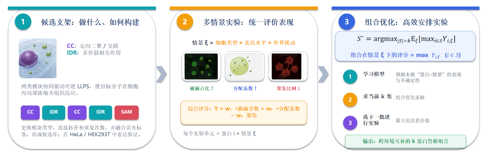
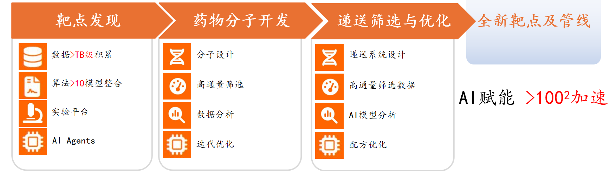

创新中心主任
张明杰
讲席教授
生命科学学院院长，中国科学院院士，香港科学院创院院士。
个人简介
2003年获香港裘槎基金会优秀学者奖；2006年获国家自然科学奖二等奖；2011年获何梁何利基金科学与技术奖，同年当选为中国科学院院士；2015年当选为香港科学院创院院士；2021年获谈家桢生命科学成就奖。
SUSTech · SCHOOL OF LIFE SCIENCES
Innovative Center for Life Science and Health
以生命科学之基，筑大健康之未来
↓ABOUT THE CENTER
随着粤港澳大湾区国际科技创新中心建设加速，生命科学领域正迎来产学研深度融合的历史性机遇。
南方科技大学生命科学学院在张明杰院长领导下，已形成结构生物学、神经科学、合成生物学等前沿学科优势。
为响应国家“创新驱动发展”战略，对接深圳市“20+8”产业集群规划（生物医药与健康产业集群），打造集技术转化、学术传播与复合型人才培养于一体的枢纽平台，实现打破传统学术与产业壁垒，构建高效协同的“产学研用”一体化创新生态，显著提升南方科技大学生命科学院在生命健康、生物医药等前沿领域的科技创新策源力、产业影响力及复合型人才培养水平。
PEOPLE & LEADERSHIP
创新中心主任
讲席教授
生命科学学院院长，中国科学院院士，香港科学院创院院士。
2003年获香港裘槎基金会优秀学者奖；2006年获国家自然科学奖二等奖；2011年获何梁何利基金科学与技术奖，同年当选为中国科学院院士；2015年当选为香港科学院创院院士；2021年获谈家桢生命科学成就奖。

创新中心副主任
教授
商学院、生命科学学院双聘
荣获浙江省科学技术进步奖三等奖，所著决策咨询专报于国务院办公厅录用、政策研究报告获浙江省委书记批示。
入选国家级海外高层次人才引进计划青年特聘专家、广东省珠江人才计划青年拔尖人才、深圳市鹏城孔雀计划特聘教授等。
WHAT WE DO
点击环形板块，了解中心职能
01 / 04
五大方向
聚焦结构生物学、合成生物学、细胞治疗、神经科学、生物医学工程五大方向；设“种子基金”支持具有明确转化潜力的早期研究。
02 / 04
需求挖掘与匹配
需求挖掘与匹配：深入企业调研，精准识别技术痛点；梳理学院科研成果，主动向企业推送。联合攻关平台：组织校企联合实验室、横向课题技术评估与孵化。
03 / 04
课程与项目
课程与项目：开设创新创业课程，与成功企业家面对面交流；实习与实践：建立企业实习基地网络；学生深度参与中心横向课题研发全过程；创业辅导、种子资金、孵化空间，支持师生基于中心成果创业。
04 / 04
“生命科学 + X”联合攻关
打破学院内学科壁垒，组建“生命科学 + X”联合攻关团队。以种子项目 / 联合课题形式，支持交叉方向的探索性研究。实现多领域跨学科的科研合作。
PROJECT PARTNERSHIPS
已为学院引进战略资金合作

深耕儿童垂直大健康领域，聚焦0-18岁儿童全生命周期健康服务，是西南地区极具特色的儿童大健康医疗服务机构。

专注低空安防领域的研发、生产、销售工作。未来，企业将与大健康创新中心开展医工交叉深度合作，发挥无人机低空监测等技术优势，赋能各大健康应用场景。
ENTREPRENEURSHIP EDUCATION
真正的收获，不是聆听一段光鲜的成功故事，而是穿透故事表象，看见事件背后的权衡取舍。
从行业判断落地到个人成长，依托真实案例，理解资源、约束、风险与选择。
学会用更系统的方式理解行业、技术、人，以及每一次决策。


 01 / 应急救援
01 / 应急救援人机车空地协同急救网络
构建人机车空地协同急救网络，抢抓心脏骤停黄金四分钟，补齐复杂场景院前急救短板，赋能公共应急体系，用科技守护群众生命安全。
补齐复杂场景院前急救短板，赋能公共应急体系，用科技守护群众生命安全。

02 / 合成生物学LLPS 支架蛋白组合设计与优化
建立对细胞类型、表达波动和环境扰动不敏感的凝聚体设计原则，服务于人工无膜细胞器、反应通路分区、信号调控、细胞工厂与治疗性细胞工程。
服务于人工无膜细胞器、反应通路分区、信号调控、细胞工厂与治疗性细胞工程。

03 / 创新药物AI 驱动的 RNA 药物研发
该项目系南方科技大学生命科学学院的陈炜教授、王泽峰教授科研团队研发，打造 AI 驱动的 RNA 创新药物研发平台，项目运用人工智能大模型完成 RNA 序列优化、分子筛选与递送系统设计，打通靶点挖掘、分子设计、LNP 递送优化到临床前验证的研发链路。
项目运用人工智能大模型完成 RNA 序列优化、分子筛选与递送系统设计，打通靶点挖掘、分子设计、LNP 递送优化到临床前验证的研发链路。
CONNECT WITH US
课程筑基 · 项目落地 · 战略合作